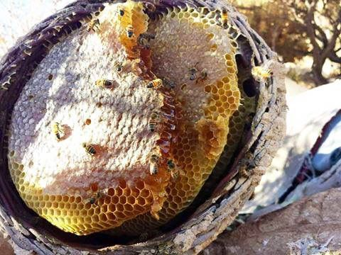
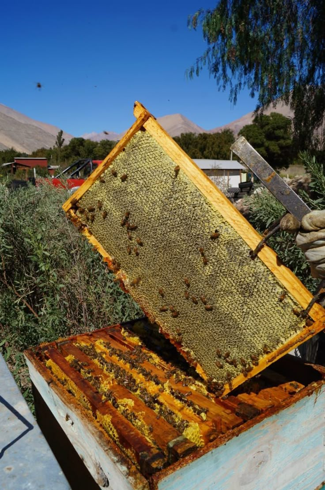
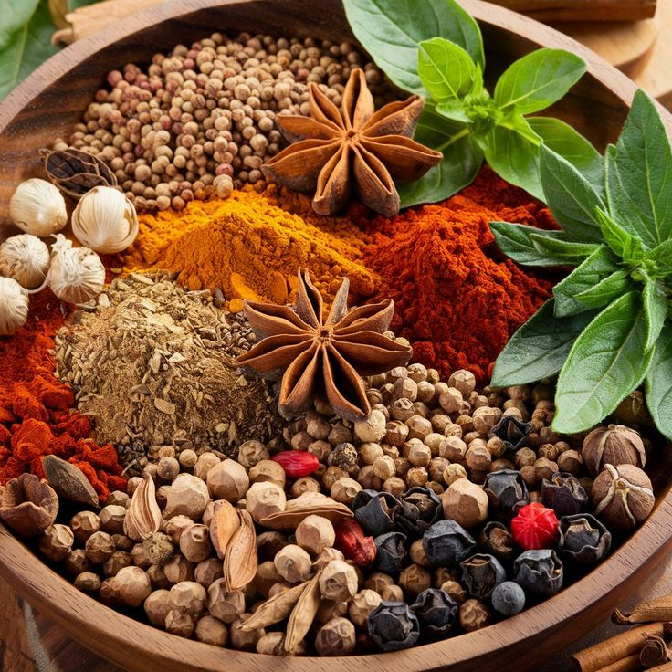

منتجاتنا – تجربة أصيلة وفاخرة
قسم العسل اليمني:


قسم البن اليمني


قسم البهارات والحرف اليدوية
نوفر أندر التوابل والحرف اليمنية الأصيلة
نقدم تشكيلة مميزة من البهارات اليمنية الأصيلة التي تشتهر بها اليمن منذ القدم، بالإضافة إلى منتجات الحرف اليدوية التقليدية التي تعكس ثقافة وتراث اليمن العريق.
استكشاف البهارات